Reconstructing complete dynamic objects from monocular video requires integrating visual cues from direct observations with data-driven priors over geometry and appearance. Prior approaches either learn to directly predict per-frame 3D representations from visual input or initialize a 3D representation that is subsequently deformed and refined based on video evidence. However, the former are constrained by the scarcity of 4D training data, while the latter leverage priors only for the initial reconstruction and rely solely on video supervision thereafter; neither handles complex in-the-wild scenarios with large deformations and occlusions well.
We present Lift4D, a test-time optimization framework that addresses both limitations. First, we adapt an existing single-view 3D reconstruction model to yield temporally consistent per-frame predictions via causal latent conditioning, providing a coherent initialization for a deformable 3D Gaussian Splatting representation. We then “sculpt” this representation to match the input video through an occlusion-aware optimization that faithfully recovers visible surface details while completing unobserved regions using a view-conditioned diffusion prior. We demonstrate that Lift4D clearly improves over prior 4D reconstruction methods, particularly on challenging in-the-wild sequences with severe occlusions and non-rigid motion.
Pick a scene below to explore its complete 4D reconstruction in the interactive viewer. Click and drag to orbit; scroll to zoom.
Click a thumbnail to switch the scene. Please be patient as some scenes are large.
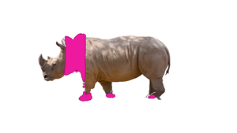
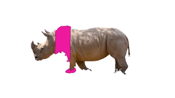
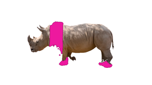
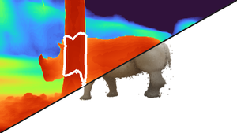
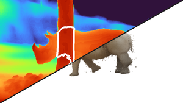
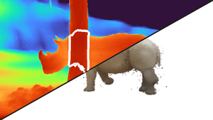
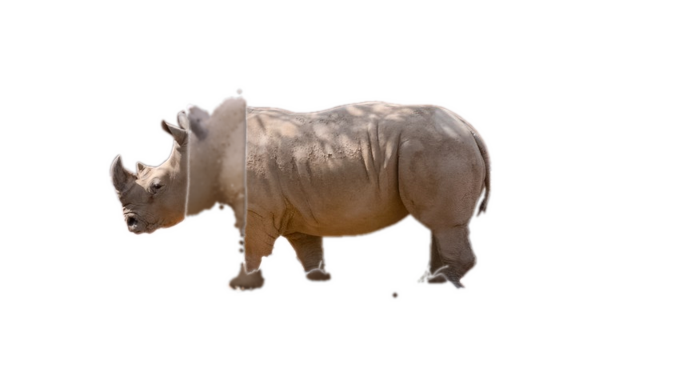
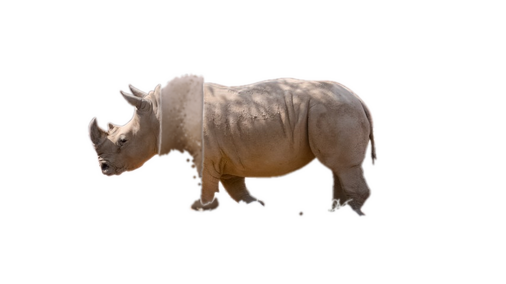
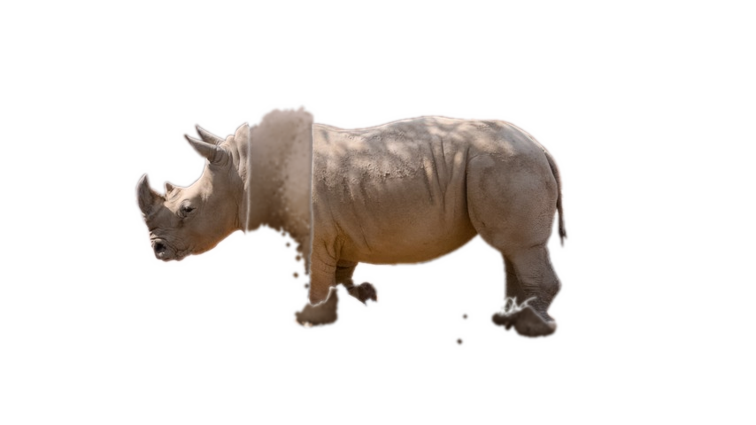
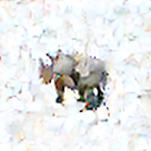
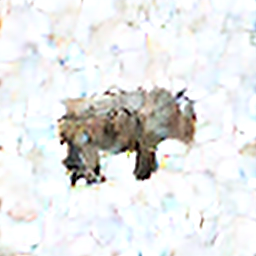
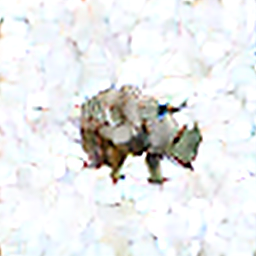
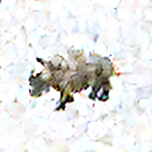
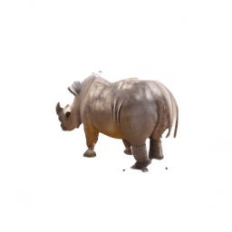
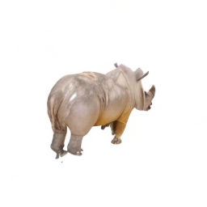
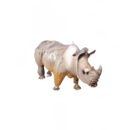
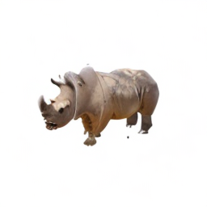
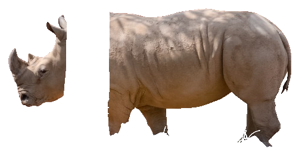
)From a monocular input video, an image-to-3D DiT produces a temporally consistent per-frame 3D reconstruction through causal latent propagation, where each frame’s 3D latent is initialized by mixing fresh noise with the previous denoised latent, and the outputs are decoded into independent sets of Gaussian splats. We consolidate these per-frame predicted sets into a single 4D complete Gaussian Splat reconstruction, represented by canonical Gaussians animated by two sets of sparse deformation nodes. The first set is fit to the per-frame outputs through a reconstruction loss (ℒrec) on the per-frame reconstructed geometry, and the appearance is then refined by optimizing the color as well as a second set of fine appearance deformation nodes against occlusion-inpainted frames and rendering loss: the 4D reconstruction is rendered from random novel views and noised, and a novel-view diffusion prior denoises them, conditioned on the per-frame frames that have their occlusions inpainted using the per-frame 3D outputs. The resulting denoised novel-view sample distillation together with a rendering loss on the visible pixels supply an appearance supervision signal (ℒapp) that aggregates visible details across frames and hallucinates in occluded and unobserved regions.
Lift4D outperforms prior 4D reconstruction baselines on both synthetic and in-the-wild footage, delivering complete temporally coherent geometry, sharper appearance, and more accurate motion even under heavy occlusion.
@article{litman2026lift4d,
author = {Litman, Yehonathan and Ma, Xiaoxuan and Shah, Manan and Ugrinovic, Nicol\'{a}s and Kitani, Kris and De la Torre, Fernando and Tulsiani, Shubham},
title = {Lift4D: Harmonizing Single-View 3D Estimation for 4D Reconstruction In-the-Wild},
journal = {arXiv},
year = {2026},
}